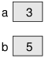
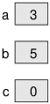

فصل دوم
متغیرها و عملگرها
(Variables and Operators)
در این فصل نحوۀ نوشتن گزاره ها (statements) با استفاده از متغیرها و عملگرها را شرح می دهیم. متغیرها مقادیری مانند اعداد و کلمات را
نگهداری می کنند و عملگرها نمادهایی برای انجام محاسبات هستند. همچنین سه نوع خطا را در برنامه نویسی شرح داده و توصیه هایی برای
اشکال زدایی ارائه می دهیم.
برای اجرای مثالهای این فصل، باید یک کلاس جدید بسازید و متد main را در آن بنویسید. در مثالهای پیش رو، کلاس و متد را نمی نویسیم تا مثالها مختصرتر باشند.
2.1 تعریف متغیرها
(Declaring Variables)
یکی از قدرتمندترین ویژگی های یک زبان برنامه نویسی توانایی تعریف و دستکاری متغیرهاست. متغیر، محلی در حافظه است که دارای
یک اسم است و مقداری را در خود ذخیره می کند
[توجه کنید که تمامی تعاریف در این کتاب بر اساس ویژگی های زبان جاوا ارائه می شوند.
برخی از این تعاریف در زبان های دیگر متفاوت هستند. برای مثال این تعریف دربارۀ متغیرها در زبان روبی صادق نیست یا حداقل
دقیق نیست].
مقادیر می توانند عدد، متن، تصویر، صدا و یا دیگر انواع داده ها باشند. برای ذخیره سازی مقادیر، نخست باید یک متغیر تعریف کنید.
String message;
گزارۀ فوق را یک «اعلان» (declaration) می نامند، چون این گزاره اعلان می کند که متغیر message از نوع رشته (String) است.
هر متغیری دارای یک نوع (type) است که تعیین می کند چه نوع مقداری را می تواند ذخیره کند. برای مثال نوع int می تواند
اعداد صحیح را ذخیره کند، مانند 1 و 5-، و نوع char می تواند کاراکترهایی مانند 'A' و 'Z' را ذخیره کند.
برخی از انواع، با یک حرف بزرگ شروع می شوند و برخی با یک حرف کوچک. اهمیت تمایز بین این دو را بعدا خواهید آموخت.
توجه کنید که نوع Int یا string در جاوا وجود ندارد
[به کوچکی و بزرگی حروف دقت کنید].
برای اعلان یک متغیر از نوع عدد صحیح (integer) به نام x، کافی است که بنویسید:
int x;
x اسمی اختیاری برای این متغیر است. به طور کلی باید از اسم هایی استفاده کنید که بیانگر معنی متغیر باشند:
String firstName;
String lastName;
int hour, minute;
در مثال فوق دو متغیر از نوع String و دو متغیر از نوع int اعلان کرده ایم. خط آخر، چگونگی اعلان چند متغیر از یک نوع را
نشان می دهد: hour و minute هر دو از نوع عدد صحیح هستند. هر گزاره ای که متغیر یا متغیرهایی را اعلان می کند، باید به سمیکالن (;) ختم شود.
اسامی متغیرها معمولا با یک حرف کوچک شروع می شود، در حالیکه اسامی کلاس ها (مانند Hello) با حرف بزرگ شروع می شود. وقتی اسم متغیری حاوی بیش از
یک کلمه است (مانند firstName)، مرسوم است که اولین حرف هر کلمه (بعد از کلمۀ اول)، بزرگ باشد. اسم متغیرها به حروف کوچک و بزرگ حساس است، بنابراین
firstName با firstname یا FirstName متفاوت است.
می توانید هر اسمی برای متغیرها انتخاب کنید. اما حدود 50 کلمۀ رزرو شده وجود دارد که کلمات کلیدی (keywords) نامیده می شوند، که مجاز به استفاده از
آنها به عنوان اسم متغیرها نیستید. از جملۀ این کلمات عبارتند از: public ،class ،static ،void و int که توسط کمپایلر برای تحلیل ساختار برنامه استفاده
می شوند.
لیست کامل کلمات کلیدی در جاوا را می توانید اینجا: https://thinkjava.org/keywords ببینید. اما نیاز نیست آنها را حفظ کنید. اغلب ویرایشگرهای برنامه نویسی
از قابلیت هایلایت کردن سینتکس برخوردارند که بخش های مختلف برنامه را با رنگ های متفاوتی نمایش می دهند.
2.2 مقداردهی متغیرها
(Assigning Variables)
اکنون که متغیرهایی را اعلان کردیم، می توانیم از آنها برای ذخیره سازی مقادیر استفاده کنیم. برای این کار از گزارۀ مقداردهی استفاده می کنیم:
message = "Hello!"; // give message the value "Hello!"
hour = 11; // assign the value 11 to hour
minute = 59; // set minute to 59
مثال بالا سه مقداردهی را نشان می دهد و کامنت ها بیانگر شیوه های متفاوتی هستند که افراد از آنها برای بیان مقدار دهی به متغیرها استفاده می کنند.
در اینجا واژه ها ممکن است سردرگم کننده باشند، اما ایدۀ زیربنایی ساده و صریح است:
-وقتی متغیری را اعلان می کنید، محلی را در حافظه که دارای یک نام است ایجاد می کنید.
-وقتی متغیری را مقداردهی می کنید، مقدار آن متغیر را به روزرسانی می کنید.
به عنوان یک قاعدۀ کلی، نوع یک متغیر باید مشابه نوع مقداری باشد که در آن قرار می دهید. برای مثال، نمی توانید یک رشته را در متغیر minute و یا
یک عدد صحیح را در متغیر message قرار دهید. در کتاب مثال هایی خواهیم زد که از این قاعده پیروی نمی کنند اما بعدا به آن خواهیم رسید.
یکی از موارد گیج کننده رشته هایی هستند که شبیه به اعداد صحیحند درحالیکه عدد صحیح نیستند. برای مثال، متغیر message می تواند حاوی رشتۀ
"123" باشد، که متشکل از کاراکترهای "1"، "2"، و "3" است، اما این همان عدد صحیح 123 نیست.
message = "123"; // legal
message = 123; // not legal
متغیرها پیش از استفاده باید مقداردهی اولیه (initialized) شوند. در عین حال که مانند مثال های بالا می توانید متغیری را اعلان
و سپس آن را مقداردهی کنید، همچنین می توانید متغیر را همزمان با اعلان، مقداردهی اولیه کنید:
String message = "Hello!";
int hour = 11;
int minute = 59;
2.3 دیاگرام ها (نمودارها)ی حافظه
(Memory Diagrams)
از آنجا که جاوا از نماد = برای مقداردهی استفاده می کند، ممکن است به اشتباه گزارۀ a = b را گزارۀ تساوی تفسیر کنید،
درحالیکه اینطور نیست.
تساوی دارای قابلیت جابه جایی است، اما مقداردهی اینگونه نیست. برای مثال در ریاضیات اگر a = 7 باشد، بنابراین 7 = a است.
در جاوا گزارۀ a = 7 گزاره ای مجاز است اما 7 = a مجاز نیست. در سمت چپ گزارۀ مقداردهی باید اسم متغیر نوشته شود (محل حافظه).
int a = 5;
int b = a; // a and b are now equal
a = 3; // a and b are no longer equal
خط سوم مقدار a را تغییر می دهد اما مقدار b را تغییر نمی دهد، بنابراین پس از خط سوم، a و b دیگر برابر نیستند.
روی هم رفته، در یک برنامه، متغیرها و مقادیر آنها وضعیت برنامه (program state) را مشخص می کنند. تصویر زیر وضعیت برنامه را پس از اجرای این
گزاره های مقداردهی نشان می دهد.

دیاگرام هایی مانند این که بیانگر وضعیت برنامه هستند دیاگرام های حافظه نامیده می شوند. هر متغیر با یک باکس نمایش داده می شود، اسم
متغیر در بیرون و مقدار حال حاضر آن در داخل باکس قرار می گیرد.
وقتی برنامه اجرا می شود وضعیت حافظه تغییر می کند، بنابراین دیاگرام های حافظه در هر لحظه فقط نقطه ای خاص را نشان می دهند. برای مثال اگر
خط ;int c = 0 را به مثال قبل اضافه کنیم، دیاگرام حافظه مانند تصویر زیر خواهد بود:

2.4 پرینت کردن متغیرها
(Printing Variables)
با استفاده از print یا println می توانید مقدار کنونی یک متغیر را نشان دهید. گزاره های زیر متغیری را با نام firstLine اعلان کرده، مقدار آن
را برابر "!Hello, again" قرار داده و آن را نمایش می دهند:
String firstLine = "Hello, again!";
System.out.println(firstLine);
وقتی از نشان دادن یا نمایش دادن یک متغیر صحبت می کنیم، منظور ما به طور کلی نشان دادن مقدار آن متغیر است. برای نمایش اسم
یک متغیر، باید آن را داخل علامت نقل قول قرار دهید:
System.out.print("The value of firstLine is ");
System.out.println(firstLine)
خروجی:
The value of firstLine is Hello, again!
کد نمایش یک متغیر ارتباطی به نوع (type) آن ندارد.
int hour = 11;
int minute = 59;
System.out.print("The current time is ");
System.out.print(hour);
System.out.print(":");
System.out.print(minute);
System.out.println(".");
خروجی:
The current time is 11:59.
برای نمایش چندین مقدار در یک خط، معمولا از چندین گزارۀ print استفاده می شود و در خط آخر، گزارۀ println نوشته می شود.
نوشتن println را فراموش نکنید. در بسیاری از کامپیوترها خروجی print ذخیره می شود اما تا زمانی که println اجرا نشود، آن خروجی نمایش داده نمی شود و
پس از اجرای println، کل خروجی به یکباره نمایش داده می شود. اگر println را حذف کنید، برنامه ممکن است مقدار ذخیره شده را در زمانی که
انتظار آن را ندارید نمایش دهد یا حتی برنامه را بدون آنکه مقداری را نمایش دهد تمام کند.
2.5 عملگرهای حسابی
(Arithmetic Operators)
عملگرها نمادهایی هستند که محاسبات ساده را انجام می دهند. عملگرهای حسابی مهم عبارتند از:
عملگر جمع +، عملگر تفریق -، عملگر ضرب *، و عملگر تقسیم /.
برنامۀ زیر زمان یک روز را از ساعت به دقیقه تبدیل می کند:
int hour = 11;
int minute = 59;
System.out.print("Number of minutes since midnight: ");
System.out.println(hour * 60 + minute);
خروجی:
Number of minutes since midnight: 719
در این برنامه، hour * 60 + minute یک عبارت است که در آن مقداری واحد (719) محاسبه می شود. وقتی برنامه اجرا می شود،
مقدار هر متغیر با مقدار کنونی آن جایگزین می شود و سپس عملگرها اعمال می شوند. مقادیری که عملگرها روی آنها عمل می کنند
عملوند (operand) نامیده می شوند.
عبارت ها به طور کلی ترکیبی از اعداد، متغیرها، و عملگرها هستند. وقتی عبارت ها کمپایل و اجرا می شوند تبدیل به مقداری
واحد می شوند. برای مثال، مقدار عبارت 1 + 1 عدد 2 است. در عبارت hour - 1، جاوا متغیر (hour) را به مقدارش تغییر می دهد،
در نتیجه این عبارت تبدیل به 1 - 11 می شود و در نهایت مقدار 10 حاصل می شود.
در عبارت hour * 60 + minute، هر دوی متغیرهای موجود در عبارت تغییر می کنند و عبارت به صورت 59 + 60 * 11 در می آید.
ابتدا عمل ضرب انجام می شود که نتیجه می شود 59 + 660، و سپس عمل جمع انجام می شود که نهایتا مقدار 719 به دست می آید.
عملگرهای جمع، تفریق و ضرب، همان اعمالی که از آنها انتظار داریم را انجام می دهند، اما ممکن است از نحوۀ کار عملگر تقسیم
تعجب کنید. برای مثال قطعه کد زیر سعی در محاسبۀ کسری از ساعت سپری شده دارد:
System.out.print("Fraction of the hour that has passed: ");
System.out.println(minute / 60);
اما کد بالا این خروجی را به همراه دارد:
Fraction of the hour that has passed: 0
این خروجی گیج کننده است. مقدار minute برابر با 59 است، و حاصل 59 تقسیم بر 60 باید 0.98333 باشد نه 0. مشکل اینجاست که
وقتی عملوندها از نوع عدد صحیح هستند، جاوا عمل تقسیم صحیح (integer division) را انجام می دهد. در جاوا تقسیم صحیح همیشه به
0 گرد می شود، حتی در موارد اینچنینی که عدد صحیح بعدی
[یعنی 1]
به حاصل تقسیم
[یعنی 0.98333]
نزدیک تر است.
یکی از راه های جایگزین کسر، محاسبۀ درصد است:
System.out.print("Percent of the hour that has passed: ");
System.out.println(minute * 100 / 60);
خروجی:
Percent of the hour that has passed: 98
در این مثال باز هم نتیجه به سمت پایین گرد شده است اما الان نتیجه حداقل تقریبا درست است.
2.6 اعداد ممیز شناور یا اعشاری
(Floating-Point)
یک راه حل عمومی تر استفاده از اعداد ممیز شناور (Floating-Point) است که مقادیر را به صورت اعشاری نشان می دهند. در جاوا نوع پیش فرض اعشاری
double نامیده می شود که مخفف "double-precision" است. می توانید متغیرهایی از نوع double بسازید و آن ها را مانند انواع دیگری
که دربارۀ آنها صحبت کردیم مقداردهی کنید:
double pi;
pi = 3.14159;
جاوا وقتی یکی یا بیش از یکی از عملوندها از نوع double باشد، عمل تقسیم اعشاری را انجام می دهد. بنابراین می توانیم
مشکلی که پیشتر داشتیم را به این صورت حل کنیم:
double minute = 59.0;
System.out.print("Fraction of the hour that has passed: ");
System.out.println(minute / 60.0);
خروجی:
Fraction of the hour that has passed: 0.9833333333333333
اگرچه اعداد اعشاری کاربردی هستند اما در عین حال ممکن است گمراه کننده باشند. برای مثال در جاوا عدد صحیح 1 با عدد اعشاری 1.0
با وجود اینکه برابر به نظر می رسند اما متفاوتند. اگر بخواهیم دقیقتر صحبت کنیم، آنها دارای انواع دادۀ (data types)
متفاوتی هستند و شما نمی توانید متغیری از یک نوع
[مثلا int]
را با مقداری از نوع دیگر
[مثلا double]
مقدار دهی کنید.
در نتیجه، کد زیر مجاز نیست چرا که در سمت چپ یک int قرار دارد و مقدار سمت راست double است:
int x = 1.1; // compiler error
ممکن است این قاعده را به سادگی فراموش کنید، چون جاوا در موارد بسیاری به صورت خودکار یک نوع را به نوع دیگر تبدیل می کند:
double y = 1; // legal, but bad style
مثال بالا باید غیرمجاز باشد، اما چون جاوا به صورت خودکار مقدار 1 را که از نوع int است به 1.0 که از نوع double است تبدیل می کند، کد بالا
درست کار می کند. این آسان گیری در جاوا با اینکه کاربردی است اما اغلب موجب ایجاد مشکلاتی برای افراد مبتدی می شود. برای مثال:
double y = 1 / 3; // common mistake
ممکن است انتظار داشته باشید که در کد بالا مقدار y برابر با 0.333333 شود اما مقدار آن 0.0 خواهد بود. عبارت سمت راست، تقسیم را بین دو عدد صحیح
انجام می دهد بنابراین جاوا «تقسیم صحیح» را بین آنها انجام می دهد که حاصل، 0 و از نوع int است. سپس جاوا با استفاده از همان تبدیل خودکار،
0 را تبدیل به 0.0 می کند و در y قرار می دهد.
یک راه برای حل این مشکل (به محض پیدا کردن باگ) این است که عبارت سمت راست را اعشاری کنیم. در کد زیر مقدار y چنانکه انتظار داریم برابر با
0.333333 می شود.
double y = 1.0 / 3.0; // correct
همیشه از این سبک و سیاق پیروی کنید که در متغیرهای از نوع ممیز شناور مقادیری از همان نوع قرار دهید. کمپایلر شما را مجبور به انجام
این کار نمی کند اما شما هرگز نمی دانید که یک اشتباه ساده چه زمانی و در کجا ممکن است رخ دهد و شما را دچار مشکل کند.
2.7 خطاهای گرد کردن
(Rounding Errors)
اغلب اعداد اعشاری فقط به طور تقریبی درست هستند. برخی اعداد مانند اعداد صحیح با اندازۀ معقول
[یعنی اعداد صحیحی که خیلی بزرگ نیستند]
را
می توان به طور دقیق بیان کرد. اما کسرهای نامختوم مانند 1/3 و اعداد گنگ مانند عدد پی را نمی توان به طور دقیق نمایش داد. برای بیان چنین
اعدادی، کامپیوترها باید عدد را به نزدیک ترین عدد اعشاری گرد کنند.
اختلاف میان عدد مطلوب و عدد اعشاری حاصل، خطای گرد کردن نامیده می شود. برای مثال دو گزارۀ زیر باید با هم برابر باشند:
System.out.println(0.1 * 10);
System.out.println(0.1 + 0.1 + 0.1 + 0.1 + 0.1
+ 0.1 + 0.1 + 0.1 + 0.1 + 0.1);
اما خروجی کد بالا در اغلب ماشین ها به این صورت است:
1.0
0.9999999999999999
مشکل اینجاست که 0.1 به هنگام تبدیل به عدد باینری، کسری نامختوم است. بنابراین بیان اعشاری ذخیره شدۀ آن در حافظه فقط به طور تقریبی
درست است. وقتی این تقریب ها را با هم جمع می کنیم خطاهای گردکردن با هم جمع می شوند.
در برنامه های کاربردی بسیاری (مانند گرافیک کامپیوتر، encryption، تحلیل آماری و رندرکردن مولتی مدیا)، حساب اعشاری دارای فوایدی فراتر از
هزینه ای است که برای آن پرداخت می شود، اما اگر مقدار دقیق می خواهید، به جای آن از اعداد صحیح استفاده کنید. برا مثال یک حساب بانکی که موجودی
آن 123.45 دلار است را در نظر بگیرید:
double balance = 123.45; // potential rounding error
در این مثال، مانده حساب در طول زمان که عملیات های محاسباتی مانند افزایش موجودی و برداشت از حساب انجام می شود دقت خود را از دست می دهد.
در نتیجه احتمال شکایت ارباب رجوع ناراضی از بانک وجود دارد. برای اجتناب از این مشکل می توان مانده را به صورت عدد صحیح ارائه داد:
int balance = 12345; // total number of cents
این راه حل تا زمانی که سنت ها از حد بالای نوع int که چیزی حدود 2 میلیارد است فراتر نروند خوب کار می کند.
2.8 عملگرهای مربوط به رشته ها
(Operators for Strings)
به طور کلی، شما نمی توانید عملیات های ریاضی را بر روی رشته ها انجام دهید، حتی بر روی رشته هایی که ظاهری شبیه اعداد دارند. عبارت های زیر مجاز نیستند:
"Hello" - 1 "World" / 123 "Hello" * "World"
عملگر + بر روی رشته ها عمل می کند اما نه مانند اعداد صحیح و اعشاری. در رشته ها عملگر + عمل الحاق دو رشته به هم (concatenation) را انجام می دهد. بنابراین
حاصل "!Hello, " + "World" رشتۀ "!Hello, World" خواهد بود.
به همین صورت اگر متغیری به اسم name دارید که از نوع String است، عبارت Hello, " + name" مقدار name را به رشتۀ hello می چسباند که حاصل خوش آمدگویی به شخصی است
که اسم او را در متغیر name ذخیره کرده اید.
از آنجا که عمل جمع هم بر روی اعداد و هم رشته ها عمل می کند، جاوا تبدیل خودکاری را انجام می دهد که ممکن است انتظار آن را نداشته باشید:
System.out.println(1 + 2 + "Hello");
// the output is 3Hello
System.out.println("Hello" + 1 + 2);
// the output is Hello12
جاوا این عملیات ها را از سمت چپ به راست انجام می دهد. در خط اول 1 + 2 برابر 3 می شود و حاصل "Hello" + 3 نیز می شود "3Hello".
اما در خط دوم حاصل 1+"Hello" می شود "Hello1" و حاصل 2+"Hello1" می شود "Hello12".
وقتی بیش از یک عملگر جمع در عبارتی که حاصل آن یک رشته است داریم، جاوا از سمت چپ به راست عمل جمع یا الحاق آنها را انجام می دهد.
اما در عبارت هایی که از نوع عددی هستند جاوا از قواعد ریاضی پیروی می کند:
-اعمال ضرب و تقسیم نسبت به جمع و تفریق دارای اولویت هستند، یعنی آنها زودتر انجام می شوند. بنابراین حاصل 3 * 2 + 1 برابر با 7 است، نه 9،
و حاصل 2 / 4 + 2 برابر با 4 است، نه 3.
-اگر عملگرها دارای الویت برابر باشند، از سمت چپ به راست بررسی می شوند. بنابراین در عبارت 60 / 100 * minute، ابتدا عمل ضرب انجام می شود،
اگر مقدار متغیر minute برابر با 59 باشد، خواهیم داشت 60 / 5900، که حاصل 98 است. اگر این عمل از سمت راست به چپ انجام می شد [یعنی اول 100 تقسیم
بر 60 می شد] نتیجه 1 * 59 بود که نادرست است.
-هرگاه بخواهیم از قاعدۀ اولویت عملگرها پیروی نکنیم می توانیم از پرانتز استفاده کنیم. عبارت های داخل پرانتز پیش از باقی عبارات ارزیابی می شوند،
بنابراین حاصل 3 * (2 + 1) می شود 9. می توانید برای ساده تر کردن خواندن یک عبارت از پرانتز استفاده کنید، مانند 60 / (100 * minute)
که در این مورد نتیجۀ عبارت هم تغییر نمی کند.
جدول کامل اولویت عملگرها را می توانید در راهنمای رسمی جاوا در (https://thinkjava.org/operators) بخوانید. وقتی به عبارتی نگاه می کنید،
اگر ترتیب اولویت عملگرها در آن واضح نیست، برای خواناتر شدن عبارت می توانید از پرانتز استفاده کنید. اما در طول زمان این جزئیات زبان جاوا در شما درونی می شود.
2.9 پیام های خطای کمپایلر
(Compiler Error Messages)
سه نوع خطا در یک برنامه ممکن است رخ دهد: خطاهای زمان کمپایل، خطاهای زمان اجرا و خطاهای منطقی.
خطاهای زمان کمپایل وقتی اتفاق می افتند که شما از قواعد زبان جاوا پیروی نکنید. برای مثال وقتی پرانتز، کروشه یا آکولادی را باز می کنید باید آنها را ببندید.
بنابراین (2 + 1) مجاز است اما 8) مجاز نیست، در این مورد اخیر برنامه کمپایل نمی شود و کمپایلر پیغام "syntax error" می دهد.
پیغام های خطای کمپایلر معمولا محلی از برنامه که خطا در آنجا رخ داده است را نشان می دهند. گاهی اوقات این پیغام ها دقیقا به شما می گویند که چه خطایی رخ داده است.
برای مثال به برنامۀ Hello World بخش 1.3 بر می گردیم:
public class Hello {
public static void main(String[] args) {
// generate some simple output
System.out.println("Hello, World!");
}
}
اگر فراموش کنید که در انتهای گزارۀ پرینت، سمیکالن بگذارید، احتمالا خطایی مانند خطای زیر را دریافت خواهید کرد:
File: Hello.java [line: 5]
Error: ';' expected
این پیغام خیلی خوب است چون: محل خطا را به دقت نشان داده است. پیغام خطا به شما می گوید که چه خطایی رخ داده است. اما درک پیغام های خطا
همیشه انقدر ساده نیست. گاهی اوقات کمپایلر، محلی از برنامه که خطا در آنجاست را گزارش می دهد اما محل دقیق آن را مشخص نمی کند. و گاهی اوقات
توضیحی که برای مشکل ارائه می شود بیشتر از آنکه کمک کننده باشد گیج کننده است.
برای مثال اگر فراموش کنید که در انتهای متد main (خط 6) آکولاد را ببندید، ممکن است چنین پیغامی دریافت کنید:
File: Hello.java [line: 7]
Error: reached end of file while parsing
در اینجا دو مشکل وجود دارد. اول اینکه پیغام خطا از نقطه نظر کمپایلر نوشته شده است، نه شما. parsing یعنی فرایند خواندن یک برنامه
پیش از ترجمۀ آن. اگر کمپایلر به انتهای فایل برسد اما همچنان خواندن فایل تمام نشود، به معنی آن است که چیزی از قلم افتاده است، اما
کمپایلر نمی داند که آن چیست، و در کجا قرار دارد. کمپایلر در انتهای فایل (خط 7) تشخیص می دهد که خطایی وجود دارد، اما آکولاد مفقود باید
در خط قبل قرار داشته باشد نه در خط 7.
پیغام های خطا حاوی اطلاعات مفیدی هستند، بنابراین باید سعی کنید آنها را بخوانید و بفهمید. اما آنها را به صورت لفظ به لفظ (تحت اللفظی) معنی نکنید.
در طول چند هفتۀ اول یادگیری برنامه نویسی احتمالا زمان زیادی را صرف خطاهای سینتکس و خطاهای زمان کمپایل خواهید کرد. به مرور که مجرب تر می شوید،
کمتر خطا می کنید و خطاها را سریعتر پیدا می کنید.
2.10 انواع دیگر خطاها
(Other Types of Errors)
نوع دوم خطا، خطای زمان اجراست که به این خاطر به این نام نامیده می شود که تا زمانی که برنامه اجرا نشود، این خطا رخ نمی دهد. در جاوا،
این خطاها زمانی که اشکالی در اجرای بایت کد توسط مفسر جاوا بوجود می آید رخ می دهند. اینگونه خطاها را «استثنائات» (exceptions) می نامند،
چون معمولا بیانگر این هستند که چیزی غیرقابل انتظار رخ داده است.
در برنامه های ساده ای که در چند فصل ابتدایی این کتاب خواهید دید، خطاهای زمان اجرا به ندرت اتفاق می افتند، بنابراین احتمالا کمی زمان می برد تا با
آنها مواجه شوید. وقتی خطای زمان اجرایی رخ می دهد، برنامه به اصطلاح کرش می کند (crash) یا بسته می شود، و پیغام خطایی را نشان می دهد که آن چه که رخ داده را
به همراه محل آن نشان می دهد. برای مثال اگر به طور تصادفی عددی را بر صفر تقسیم کنید، پیغام خطایی مانند پیغام زیر دریافت می کنید:
Exception in thread "main" java.lang.ArithmeticException: / by zero
at Hello.main(Hello.java:5)
پیغام های خطا برای اشکال زدایی بسیار سودمند هستند. خط اول حاوی اسم استثنااست، یعنی ArithmeticException.
[همانطور که گفته شد، از این جهت که
این خطاها غیر قابل انتظار هستند، به آنها استثنا گفته می شود.]
و پیغام خطا در ادامه به آنچه که رخ داده دقیق تر اشاره می کند، یعنی عمل تقسیم بر صفر.
خط بعدی متدی را نشام می دهد که خطا در آن رخ داده است. Hello.main می گوید که متد main در کلاس Hello قرار دارد. همچنین گزارش می دهد که این متد در چه فایلی
تعریف شده است، یعنی فایل Hello.java، و شمارۀ خطی که خطا در آن اتفاق افتاده، یعنی 5.
نوع سوم خطا، خطای منطقی است. اگر برنامۀ شما خطای منطقی داشته باشد، بدون خطا کمپایل و اجرا می شود اما به جای کاری که در واقع باید انجام دهد، کاری را انجام می دهد
که شما خواسته اید. برای مثال، در زیر نسخه ای از برنامۀ Hello World می بینید که دارای خطای منطقی است:
public class Hello {
public static void main(String[] args) {
System.out.println("Hello, ");
System.out.println("World!");
}
}
برنامۀ بالا کمپایل و اجرا می شود اما خروجی زیر را در پی خواهد داشت:
Hello,
World!
فرض کنید که می خواستیم خروجی در یک خط نمایش داده شود، در اینصوزت خروجی بالا درست نیست. مشکل اینجاست که در خط اول از println استفاده کرده ایم،
که احتمالا می خواستیم از print استفاده کنیم (مثال "Goodbye, cruel world" بخش 1.5 را ببینید).
تشخیص خطاهای منطقی می تواند دشوار باشد چون باید به عقب برگردید، خروجی برنامه را ببینید، سعی کنید بفهمید که چرا برنامه دچار مشکل شده، و چطور
باید مشکل را رفع کرد. معمولا در این موارد کمپایلر و مفسر نمی توانند کمکی به شما بکنند چون آنها نمی دانند که برنامه برای انجام چه کاری نوشته شده است.
2.11 واژگان
(Vocabulary)
متغیر (variable): محلی دارای نام در حافظه برای متغیرها. تمامی متغیرها دارای نوعی هستند که موقع ایجاد متغیر اعلان می شود.
مقدار (value): یک عدد، رشته، یا دادۀ دیگری که می تواند در یک متغیر ذخیره شود. هر مقداری دارای یک نوع است (مثل int یا String).
نوع (type): نوع، در اصطلاح ریاضی مجموعه ای از مقادیر است. نوع یک متغیر تعیین می کند که متغیر چه مقداری می تواند داشته باشد.
اعلان (declaration): یک گزاره که متغیری جدید می سازد و نوع آن را مشخص می کند.
کلمۀ کلیدی (keyword): یک کلمۀ رزرو شده که توسط کمپایلر برای تحلیل برنامه ها استفاده می شود. نمی توانید از کلمات کلیدی (مانند public, class و void)
به عنوان اسم متغیرها استفاده کنید.
مقداردهی (assignment): گزاره ای که مقداری را در متغیر قرار می دهد.
مقداردهی اولیه (initialize): مقداردهی به یک متغیر برای اولین بار.
وضعیت (state): متغیرهای یک برنامه و مقدار کنونی آنها.
دیاگرام حافظه: بیانی گرافیکی از وضعیت یک برنامه در برهه ای از زمان.
عملگر (operator): نمادی که بیانگر محاسبه ای است مانند جمع، ضرب، یا الحاق رشته ها.
عملوند (operand): یکی از مقادیری که عملگر بر روی آنها عمل می کند. اغلب عملگرها در جاوا نیازمند دو عملوند هستند.
عبارت (expression): ترکیبی از متغیرها، عملگرها، و مقادیری که مقداری واحد را ارائه می دهند. عبارت ها هم دارای نوع هستند
که توسط عملگرها و عملوندهایشان تعیین می شود.
ممیز شناور (floating-point): نوع داده ای که بیانگر اعدادی است که بخشی از آنها صحیح و بخشی دیگر کسری است. در جاوا نوع
ممیز شناور پیش فرض، double است.
خطای گرد کردن (rounding error): اختلاف میان عدد مطلوب و نزدیک ترین عدد ممیز شناور.
الحاق (concatenate): چسباندن دو مقدار به هم، اغلب در مورد رشته ها.
ترتیب عملیات ها (order of operations): قواعدی که تعیین کنندۀ ترتیب ارزیابی عبارت ها هستند. با نام «اولویت عملگر» (operator precedence)
نیز شناخته می شوند.
خطای زمان کمپایل (compile-time error): خطایی در سورس کد که کمپایل آن را ناممکن می کند. «خطای سینتکس» (syntax error) نیز نامیده می شود.
operator precedence
تجزیه (parse): تحلیل ساختار یک برنامه، اولین کاری که کمپایلر انجام می دهد.
خطای زمان اجرا (run-time error): خطایی در برنامه که اجرای آن را ناممکن می کند. «استثنا» (exception) نیز نامیده می شود.
خطای منطق (logic error): خطایی در برنامه که موجب می شود برنامه کاری غیر از آنچه برنامه نویس در نظر دارد انجام دهد.
2.12 تمرین ها
کدهای این فصل در پوشۀ ch02 موجود در پوشۀ ThinkJavaCode2 قرار دارد. نحوۀ دانلود مخزن در مقدمۀ کتاب آمده است. پیش از شروع تمرین ها پیشنهاد
می کنیم که مثال ها را کمپایل و اجرا کنید.
اگر هنوز پیوست A.2 را نخوانده اید، الان زمان خوبی برای این کار است. این بخش از پیوست دربارۀ صفحۀ DrJava Interactions توضیح می دهد که
شیوۀ مفیدی برای توسعه و تست قطعات کوچکی از کد بدون نوشتن کامل تعریف یک کلاس است.
تمرین 2.1
اگر از این کتاب در کلاس درس استفاده می کنید، احتمالا از انجام این تمرین لذت خواهید برد. یک حریف پیدا کنید و با او Stump the Chump بازی کنید:
با برنامه ای شروع کنید که به درستی کمپایل و اجرا می شود. یکی از بازیکن ها باید به جایی غیر از صفحه نمایش کامپیوتر نگاه کند و بازیکن
دیگر باید خطایی به برنامه اضافه کند [یعنی تغییر کوچکی در آن بدهد که منجر به خطا شود.]. سپس بازیکن اول باید سعی کند خطا را بیابد و آن
را رفع کند. اگر خطا را قبل از کمپایل کردن برنامه پیدا کنید دو امتیاز می گیرید، اگر با کمک کمپایلر خطا را بیابید یک امتیاز می گیرید.
و اگر نتوانستید خطا را پیدا کنید، یک امتیاز نصیب رقیب شما خواهد شد.
تمرین 2.2
هدف از این تمرین عبارت است از: (1) استفاده از الحاق رشته (string concatenation) برای نمایش مقادیری با نوع های متفاوت (int و String)،
و (2) تمرین توسعۀ تدریجی برنامه ها با افزودن تعداد کمی گزاره در هر زمان:
1. برنامۀ جدیدی به نام Date.java بسازید. برنامه ای مانند Hello World را در آن کپی کنید یا خودتان بنویسید و مطمئن شوید
که برنامه به درستی کمپایل و اجرا می شود.
2. بر اساس مثال بخش 2.4، برنامه ای بنویسید که متغیرهایی با اسامی day، date، month، و year داشته باشد. متغیر day حاوی روزی از هفته (مانند Friday)،
و متغیر date حاوی روزی از ماه خواهد بود (مانند 13هم [سیزدهم]). مقادیری را در این متغیرها قرار دهید که بیانگر تاریخ امروز باشند.
3. مقدار هر متغیر را در یک خط نمایش دهید. این یک گام میانی است که کمک می کند تا بررسی کنید که همه چیز تا اینجا خوب کار می کند. قبل از آنکه جلوتر برویم
برنامه را کمپایل و اجرا کنید.
4. برنامه را به گونه ای ویرایش کنید که تاریخ را با فرمت نمایش استاندارد تاریخ در آمریکا نمایش دهد. برای مثال: Thursday, July 18, 2019.
5. برنامه را به گونه ای ویرایش کنید که تاریخ را با فرمت اروپایی نمایش دهد. خروجی نهایی باید به این صورت باشد:
American format: Thursday, July 18, 2019
European format: Thursday 18 July 2019
تمرین 2.3
هدف از این تمرین عبارت است از: (1) استفاده از برخی از عملگرهای حسابی، و (2) فکر کردن به وجودهای مرکبی مانند زمان و روز که با مقادیر متعددی
امکان نمایش دارند.
1. برنامۀ جدیدی به نام Time.java بسازید. از این به بعد دیگر یادآوری نمی کنیم که با یک برنامۀ کوچک که کمپایل و اجرا می شود شروع کنید، خودتان باید
این کار را انجام دهید.
2. در راستای مثال بخش 2.4، متغیرهایی با اسم های hour، minute، و second بسازید. مقادیری تقریبا معادل با زمان اکنون را در آن ها قرار دهید. از فرمت
24 ساعتی استفاده کنید به طوری که مقدار متغیر hour در ساعت 2:00 PM (2 ظهر) برابر با 14 باشد.
3. برنامه باید تعداد ثانیه ها را از ساعت 12 شب تا به اکنون محاسبه و نمایش دهد.
4. تعداد ثانیه های باقی مانده از اکنون تا آخر روز (ساعت 12 شب) را محاسبه و نمایش دهید.
5. چند درصد از روز گذشته است؟ آن را محاسبه و نمایش دهید. محاسبۀ درصد را با اعداد صحیح نمی توانید انجام دهید، بنابراین می توانید از اعداد ممیز-شناور
استفاده کنید.
6. از وقتی شروع به نوشتن برنامۀ این تمرین کردید ثانیه ها و دقایقی گذشته است. متغیرهای hour، minute، و second را به زمان الان تغییر بدهید
و سپس کدی بنویسید تا زمان سپری شده از شروع نوشتن این تمرین تا الان را محاسبه و نمایش دهد.
نکته:
ممکن است نیاز داشته باشید در طول محاسبه و نوشتن برنامه از متغیرهای اضافی استفاده کنید. متغیرهایی که در محاسبه استفاده می شوند
اما هرگز نمایش داده نمی شوند را گاهی متغیرهای "واسط" یا "موقت" می نامند.
(Declaring Variables)
String message;
int x;
String firstName;
String lastName;
int hour, minute;
(Assigning Variables)
message = "Hello!"; // give message the value "Hello!"
hour = 11; // assign the value 11 to hour
minute = 59; // set minute to 59
message = "123"; // legal
message = 123; // not legal
String message = "Hello!";
int hour = 11;
int minute = 59;
(Memory Diagrams)
int a = 5;
int b = a; // a and b are now equal
a = 3; // a and b are no longer equal
(Printing Variables)
String firstLine = "Hello, again!";
System.out.println(firstLine);
System.out.print("The value of firstLine is ");
System.out.println(firstLine)
The value of firstLine is Hello, again!
int hour = 11;
int minute = 59;
System.out.print("The current time is ");
System.out.print(hour);
System.out.print(":");
System.out.print(minute);
System.out.println(".");
The current time is 11:59.
(Arithmetic Operators)
int hour = 11;
int minute = 59;
System.out.print("Number of minutes since midnight: ");
System.out.println(hour * 60 + minute);
Number of minutes since midnight: 719
System.out.print("Fraction of the hour that has passed: ");
System.out.println(minute / 60);
Fraction of the hour that has passed: 0
System.out.print("Percent of the hour that has passed: ");
System.out.println(minute * 100 / 60);
Percent of the hour that has passed: 98
(Floating-Point)
double pi;
pi = 3.14159;
double minute = 59.0;
System.out.print("Fraction of the hour that has passed: ");
System.out.println(minute / 60.0);
Fraction of the hour that has passed: 0.9833333333333333
int x = 1.1; // compiler error
double y = 1; // legal, but bad style
double y = 1 / 3; // common mistake
double y = 1.0 / 3.0; // correct
(Rounding Errors)
System.out.println(0.1 * 10);
System.out.println(0.1 + 0.1 + 0.1 + 0.1 + 0.1
+ 0.1 + 0.1 + 0.1 + 0.1 + 0.1);
1.0
0.9999999999999999
double balance = 123.45; // potential rounding error
int balance = 12345; // total number of cents
(Operators for Strings)
"Hello" - 1 "World" / 123 "Hello" * "World"
System.out.println(1 + 2 + "Hello");
// the output is 3Hello
System.out.println("Hello" + 1 + 2);
// the output is Hello12
(Compiler Error Messages)
public class Hello {
public static void main(String[] args) {
// generate some simple output
System.out.println("Hello, World!");
}
}
File: Hello.java [line: 5]
Error: ';' expected
File: Hello.java [line: 7]
Error: reached end of file while parsing
(Other Types of Errors)
Exception in thread "main" java.lang.ArithmeticException: / by zero
at Hello.main(Hello.java:5)
public class Hello {
public static void main(String[] args) {
System.out.println("Hello, ");
System.out.println("World!");
}
}
Hello,
World!
(Vocabulary)
American format: Thursday, July 18, 2019
European format: Thursday 18 July 2019